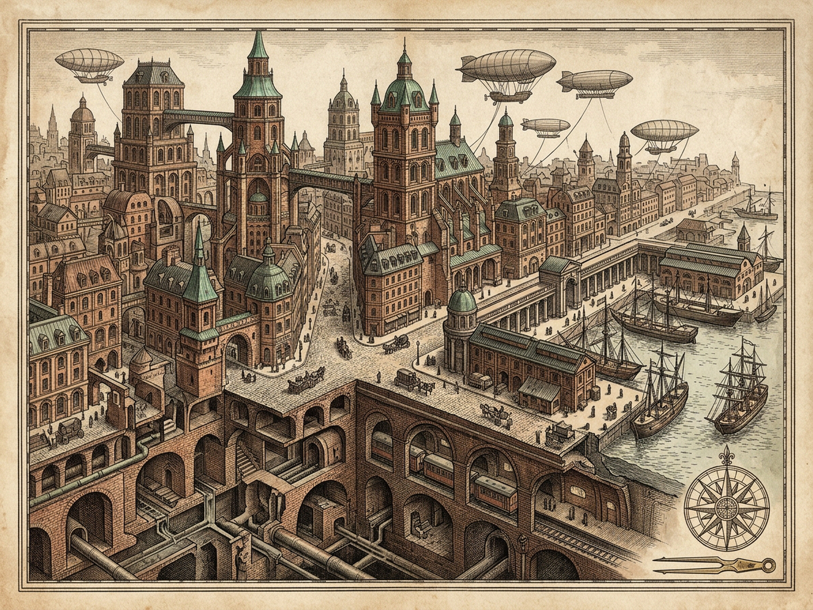
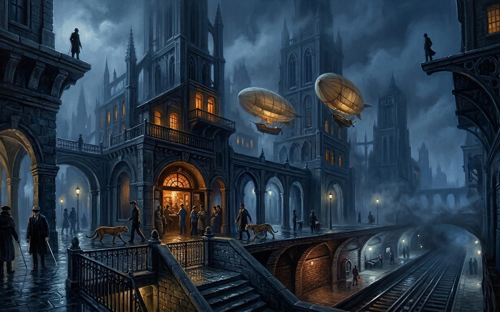

Cities & Signs 2 · IX
ZIRMA
Stereoscopic Witness-Discrepancy & Rotogravure Overprint Press
City Existence
0% · Unfixed
SPIRES & WINDOW SKY
COBBLESTONE & TATTOO ARCADE
HUMID SUBTERRANEAN VAULT
Singular Trace: 88% (evaporating)
1st click: fleeting singular sight · 2nd+ click or Space: indelible overprint
Plate Pulls: 0x
12% · Singular Fading
45% Auto-Overprint Roller
Six Canonical Stones · Register
Repeat a sign so Zirma begins to exist
I · Blind Men & Cobble Canes
0x Unfixed · 0% Inked
Companions' Sworn Singular
Trace 89%
Polo's Redundant Memory
0x Stamped
“Memory is redundant: it repeats signs so that the city can begin to exist.”
Keys: 1–6 Stones · ←→ Stereoscope · Space Overprint · A Gang Pass · P Map & Plate · M Mute · R Wash
Rag-cotton sheet #f2ebdc · Ready for impression
ZIRMA · ARCHIVAL MAP & ILLUSTRATED CITY PLATE
PLATE IX-A · COPPERPLATE CARTOGRAPHIC PLAN OF ZIRMA (map.png)

PLATE IX-B · ARCHITECTURAL FINE-ART VISTA OF ZIRMA (image.png)
